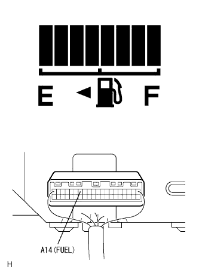

メーター&ゲージシステム 機能点検 |
| 1. トラブルシューティングの前に |
基本点検
SST(トヨタエレクトリカルテスター)を使用して、バッテリー電圧を点検する。
ヒューズ切れ、ワイヤハーネス断線、短絡、コネクターの接続不良など、目視で点検できる箇所の点検を行う。
| 2. LEDチェック |
IGスイッチOFF→ON時のLED点灯点検
IGスイッチOFF→ONに操作したときに、各インジケータ·ウォーニングインジケータが点灯することを点検する。
| インジケータ·ウォーニングランプ | イグニッションスイッチ操作 | 点灯仕様 |
|---|---|---|
| 水温インジケータ(L) | IGスイッチ OFF→ON | 水温ウォーニング(HOT)消灯→点灯→暖機後→消灯 |
| オイルプレッシャ | IGスイッチ OFF→ON | ランプ点灯 |
| チャージ | IGスイッチ OFF→ON | ランプ点灯 |
| チェックエンジン | IGスイッチ OFF→ON | ランプ点灯 |
| ブレーキ | IGスイッチ OFF→ON | 約3秒間ランプ点灯 |
| ABS | IGスイッチ OFF→ON | 約3秒間ランプ点灯 |
| VSC(VSC装着車) | IGスイッチ OFF→ON | 約3秒間ランプ点灯 |
| スリップ(VSC装着車) | IGスイッチ OFF→ON | 約3秒間ランプ点灯 |
| TRC OFF(VSC装着車) | IGスイッチ OFF→ON | 約3秒間ランプ点灯 |
| オートレベリング | IGスイッチ OFF→ON | 約3秒間ランプ点灯 |
| 水温ウォーニング(H) | IGスイッチ OFF→ON | 約6秒間ランプ点灯 |
| エアバッグ | IGスイッチ OFF→ON | 約6秒間ランプ点灯 |
シートベルトウォーニングインジケータ点検
IGスイッチON状態で、運転席側または助手席側シートベルトのタングプレートをバックルに挿入し、シートベルトウォーニングインジケータが点灯→消灯することを確認する。
| インジケータ·ウォーニングランプ | イグニッションスイッチ操作 | 点灯仕様 |
|---|---|---|
| 運転席シートベルトウォーニング | IGスイッチ OFF→ON |
|
| 助手席シートベルトウォーニング | IGスイッチ OFF→ON |
|
| 3. スピードメータ点検 |
作動点検
スピードメータテスターを使用して、スピードメータの指示誤差と積算計の作動を点検する。
| テスター指示標準速度[km/h] | メータ指示値許容範囲[km/h]( )は参考値を示す |
|---|---|
| 20 | (20-26) |
| 40 | 40-48 |
| 60 | 60-70 |
| 80 | 80-92 |
| 100 | 100-114 |
| 120 | 120-136 |
| 140 | 140-158 |
| 160 | 160-180 |
指針の振れ幅を点検する。
| 4. タコメータ点検 |
作動点検
回転計を使用して、エンジンを始動し、タコメータの指示誤差を点検する。
| 回転計指示[r/min] | メータ指示値許容範囲[r/min]( )は参考値を示す |
|---|---|
| 700 | 630-770 |
| 1000 | (900-1100) |
| 2000 | (1850-2150) |
| 3000 | 2800-3200 |
| 4000 | (3800-4200) |
| 5000 | 4800-5200 |
| 6000 | (5750-6250) |
| 5. オイルプレッシャウォーニング点検 |
エンジンオイルプレッシャスイッチASSYのコネクターを切り離す。
IGスイッチをONにする。
SST(ダイアグノーシスチェックワイヤNO.2)を使用して、車両ワイヤハーネス側コネクター端子をボデーアースと短絡させたときのオイルプレッシャウォーニングランプの状態を点検する。
| 6. エンジン オイルプレッシャ スイッチASSY点検 |
導通点検
SST(トヨタエレクトリカルテスター)を使用して、エンジンオイルプレッシャスイッチ端子←→ボデーアース間の導通を点検する。
| エンジン状態 | 基準 |
|---|---|
| エンジン停止時 | 導通あり |
| エンジン回転時 | 導通なし |
| 7. フューエルレシーバゲージ点検 |
|  |
抵抗点検
SST(トヨタエレクトリカルテスター)を使用して、フューエルレシーバゲージの各セグメント点灯位置でのコンビネーションメータのコネクターA14(FUEL)端子←→ボデーアース間の抵抗を点検する。
| 点灯セグメントNo. | 抵抗(Ω) |
|---|---|
| 1(点滅) | 107±1-92.3±3 |
| 1-2 | 92.3±3-80.6±3 |
| 1-3 | 80.6±3-68.6±3 |
| 1-4 | 68.6±3-55.3±3 |
| 1-5 | 55.3±3-43.4±3 |
| 1-6 | 43.4±3-32.0±3 |
| 1-7 | 32.0±3-16.6±2 |
| 1-8 | 16.6±2以下 |
| 8. 運転席シートベルトウォーニングランプ点検 |
作動点検
IGスイッチをONにしたとき、シートベルトウォーニングランプが点滅し、タングプレートをセットしたときに消灯することを確認する。
回路点検
フロントシートインナベルトASSY RHのコネクターを切り離す。
IGスイッチをONにする。
SST(ダイアグノーシスチェックワイヤNO.2)を使用して、車両ワイヤハーネス側のコネクター端子間を短絡させたときのウォーニングランプの状態を点検する。
| 9. 助手席シートベルトウォーニングランプ点検 |
作動点検
IGスイッチをONにし、助手席に乗員が座った状態で助手席シートベルトウォーニングランプが点滅し、タングプレートをセットしたときに消灯することを確認する。
回路点検
フロントシートインナベルトASSY LHのコネクターを切り離す。
IGスイッチをONにする。
SST(ダイアグノーシスチェックワイヤNO.2)を使用して、車両ワイヤハーネス側のコネクター端子間を短絡させたときのウォーニングランプの状態を点検する。